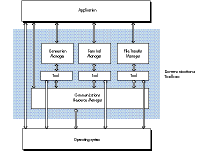
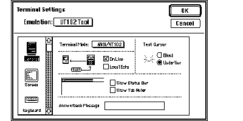
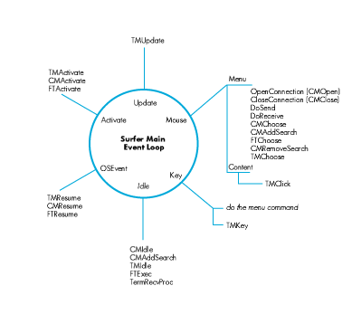

The Macintosh Communications Toolbox provides managers and utilities that offer
basic networking and communications services to applications. This article introduces
you to three of the Communications Toolbox managers--the Connection Manager, the
Terminal Manager, and the File Transfer Manager--as well as Surfer, a sample
application that uses the Communications Toolbox to implement simple networking and
communications services.
Networking and communications applications running on the Macintosh are like a good
pair of rose-colored shades. They filter out the harshness of antiquated architectures
and conventions, and present users with a familiar, intuitive interface. The Macintosh
Communications Toolbox provides a standard framework in which you can develop
modular, consistent networking and communications applications. As a developer
using the Communications Toolbox, you can write applications without having to know
the complexities of each networking and communications environment your
applications run in. For example, imagine writing a chess program that enables users
to play opponents over any sort of data connection, without having to code for each type
of connection. The Communications Toolbox makes this possible.
The Communications Toolbox consists of four managers and a set of utilities that
provide basic networking and communications services. Think of these managers and
utilities as an extension to the Macintosh Toolbox. Each of the managers in the
Communications Toolbox--the Connection Manager, the Terminal Manager, the File
Transfer Manager, and the Communications Resource Manager--handles a different
aspect of networking and communications. The utilities provide routines that perform
a variety of useful auxiliary functions. This article focuses on the Connection Manager,
the Terminal Manager, and the File Transfer Manager. Communications Toolbox
managers work with communications tools, which are self-contained software
modules that provide protocol-specific services. The managers and tools perform the
following functions:
You code to the application programming interface defined by the managers. In turn,
the managers request specific services from communications tools. The interaction
between the tool and the manager is invisible to your application, so when you design
your application, you don't have to be concerned with what sort of data connection is in
place, what kind of terminal to emulate, or what type of file transfer to perform. It's
similar to the way applications deal with the Printing Manager. Applications say
"Print," and the Printing Manager sends the request to the Printer Driver, which
figures out how to print on a specific device.
By providing basic services, communications tools free application developers from
having to learn the most heinous intricacies of communications conventions. That work
is left up to those who practice the black art of writing communications tools.
Communications tools live in the Communications folder, which is in the System
Folder and is created and populated when you install the Communications Toolbox.
(Under System 7.0 they will reside in the Extensions folder.) A number of
communications tools are available from APDA. Others, from Apple and third-party
developers, will be available in the near future.
Figure 1 shows how the Communications Toolbox managers and tools fit between your
application and the operating system. The application interacts with the manager,
which in turn interacts with the tool. The tool, in turn, communicates with the
operating system (or Communications Resource Manager), provides a specific
service, and passes back to the application (through the manager) any relevant
informationp.

Figure 1 How the Communications Toolbox Fits In
In this section we give an overview of how your application uses each manager. The
sample application Surfer, discussed in detail in the next section, provides a model of
how an application uses the Communications Toolbox.
To get each of the Communications Toolbox managers ready for action, your
application does the following:
InitCM, InitTM, or InitFT. procID for a specified tool (this is a tool file reference CMGetProcID, TMGetProcID, or FTProcID. CMNew, TMNew, or FTNew. CMChoose, TMChoose, or FTChoose, or you can set the TMChoose while the VT 102 tool is
Figure 2 The Dialog Box for Choosing and Configuring a Terminal Tool
Associated with each communications service (connection, terminal, and file
transfer) is a data structure that the manager, tool, and application maintain. For the
Connection Manager, this data structure is called the connection record; for the
Terminal Manager, the terminal record; for the File Transfer Manager, the file
transfer record. These records are discussed in detail in Macintosh Communications
Toolbox Reference . Your application refers to these records for information upon
which to base decisions, similarly to how the Window Manager uses information in the
window record.
An important concept central to the architecture of the Communications Toolbox is
that applications wait on events. When an application (Surfer, for example) gets an
event to pass to one of the communications tools, it tells the manager, which then
passes a message to the appropriate tool, along with a handle to the associated data
structure (that is, connection record, terminal record, or file transfer record). The
communication between the tool and the manager is done through the data structure and
return codes. The section "Handling Events" goes into more detail about this.
Surfer is a simple terminal emulation package that Alex adapted from the DTS sample
code sent out to developers. It uses the Communications Toolbox to implement simple
networking and communications services. It provides support for data connections,
terminal emulations, and file transfers; and can use new communications tools without
changing one line of code. Keep in mind that you can use the Communications Toolbox to
go well beyond the domain of standard terminal emulation software, to seamlessly
incorporate networking and communications functionality into all kinds of programs.
Here we'll show you selected portions of Surfer to illustrate how it uses the
Communications Toolbox. First we'll show you code to help you get a feel for the
structure and flow of the program. Then we'll show how Surfer meets the common
communications challenges of establishing and maintaining a connection, emulating a
terminal, and tranferring files. Finally, we'll discuss how Surfer handles two common
problems. You should examine the source code, which appears in its entirety on
theDeveloper Essentials disc, to fully understand Surfer. You should also examine the
connection record, terminal record, and file transfer record in Surfer. As mentioned
earlier, these records are fundamental to the operation of each manager.
HOW SURFER STARTS UP
Here's Surfer's main routine:
BEGIN
UnloadSeg(@_DataInit); { Note that _DataInit must not be in
Main! }
MaxApplZone; { Expand the heap so code segments
load
at the top. }
Initialize; { Initialize the program. }
UnloadSeg(@Initialize); { Note that Initialize must not be in
Main! }
EventLoop; { Call the main event loop. }
END.
As with surfing, where you've got to get out the wetsuit and put the board on the Bug,
Surfer has some preparation it needs to do before it calls its main event loop. The
following fragment from the Initializeprocedure shows how Surfer initializes the
Communications Toolbox:
{ Does CommToolbox exist? }
IF NOT TrapAvailable(_CommToolboxTrap, OSTrap) THEN
AlertUser('ACK!! No CommToolbox',TRUE);
{ Check for System 6.0 or better, 64K ROM. }
ignoreError := SysEnvirons(kSysEnvironsVersion, TerraMac);
WITH TerraMac DO
IF (systemVersion < $0600) OR (machineType < 0) THEN
AlertUser('Need System 6.0 or better',TRUE);
{ Check various memory configs. }
IF ORD(GetApplLimit) - ORD(ApplicZone) < kMinHeap THEN
AlertUser('Out of Memory',TRUE);
PurgeSpace(total, contig);IF total < kMinSpace THEN
AlertUser('Out of Memory',TRUE);
{ Load up the Communications Toolbox. }
{ Must initialize CRM & CTBUtilities first. }
err := InitCTBUtilities;
err := InitCRM;
err := InitTM; {Initialize the Terminal Manager.}
IF err = TMNoTools THEN
AlertUser('No terminal tools found',TRUE);
err := InitCM; { Initialize the Connection Manager. }
IF err = CMNoTools THEN
AlertUser('No connection tools found',TRUE);
err := InitFT; { Initialize the File Transfer Manager. }
IF err = FTNoTools THEN
AlertUser('No file transfer tools found',FALSE);
HANDLING EVENTS
After dealing with the initialization details, Surfer loops, waiting for events to wave
through, handling them like this:
PROCEDURE EventLoop;
VAR
gotEvent : BOOLEAN;
event : EventRecord;
BEGIN
REPEAT
DoIdle;
IF gHasWaitNextEvent THEN { Put us 'asleep' forever
under MultiFinder }
gotEvent := WaitNextEvent(everyEvent, event, 0, NIL)
ELSE BEGIN
SystemTask; { Must be called if using GetNextEvent. }
gotEvent := GetNextEvent(everyEvent, event);
END;
IF gotEvent THEN BEGIN
AdjustCursor(event.where); { Make sure we have the
right cursor. }
DoEvent(event);
END;
AdjustCursor(event.where);
UNTIL FALSE; { Loop forever; we quit through an
ExitToShell. }
END; { EventLoop }
The procedure DoEvent is where much of the code surfing takes place. The procedure
is too long to reproduce here, but Figure 3 shows the important points schematically,
and you can read the source code on the CD for more details.

Figure 3 How Surfer Handles Events
Events received by Surfer come in two main flavors: Surfer-owned and tool-owned.
Tools can create their own windows behind Surfer's back (for instance, file transfer
tools can put up a status window during a transfer), but since Surfer is in control,
events destined for these windows come through Surfer's main event loop. Luckily,
when a tool creates its own window, it stuffs a handle to itself in the window's refCon
field. All Surfer has to do to determine who owns a window is compare the window's
refCon to the existing tool handles. If a match is found, Surfer calls the appropriate
routine ( TMEvent, CMEvent, or FTEvent) so that the tool can handle the event.
Otherwise, Surfer handles the event itself.
Even Surfer's window, though, has "guests." The terminal tool needs to receive mouse
clicks and update events, and all the tools need to receive activate/deactivate and
suspend/resume events. These are passed to the tool with the appropriate routine:
TMClick, TMUpdate, CMActivate, and so on.
MANAGING IDLE TIME
The idle procedure is a little convoluted because so much is happening. Surfer has to
read and send data someplace, blink cursors, and provide all the sessions time for
background file transfers. It's something like the action at O'Hare Airport.
Because communications tools can display their own windows, Surfer must walk the
window list to give each tool time in a session. Although idle time is provided to tools
with CMIdle, FTExec, and TMIdle, Surfer doesn't want to send data to the terminal
tool if there's a file transfer in progress and the tools are using the same channel.
Another thing worth checking is the file transfer status. Did the transfer start? Has it
just ended? Was it successful? Did an auto- receive sequence come across? These
concerns are discussed in greater detail later in this article in the section "Doing a
File Transfer."
Surfer also needs to get data to the terminal tool. Surfer checks to see if the connection
is open or data is available, and if so tells the tool to read it and stream it to the
terminal:
{ Get the state of the connection. }
theErr := CMStatus(gConn, sizes, status);
IF (theErr = noErr) THEN BEGIN
{ Route the data if we have any. }
IF (BAND(status, cmStatusOpen + cmStatusDataAvail) <> 0) AND
(sizes[cmDataIn] <> 0) THEN BEGIN
{ Tell the tool to get the data. }
theErr := CMRead(gConn, gBuffer, sizes[cmDataIn],
cmData, FALSE,NIL,0,flags);
{ Send data to the terminal. }
IF (theErr = noErr) THEN
bytesEaten := TMStream(gTerm,gBuffer,
sizes[cmDataIn],flags);
{ Could check bytesEaten vs. sizes[cmDataIn]. }
END; { Sizes <> 0. }
END; { Good status. }
Now that you've seen something of Surfer's main event loop, we'll look at how Surfer
uses the Communications Toolbox managers.
INITIATING A CONNECTION
For two computers to talk to each other, they must establish and maintain a data
connection. Applications that provide terminal emulation or file transfer services use
the data connection to physically transfer the data. Before an application can open a
data connection, the Connection Manager has to be properly set up. Surfer does this
during initialization by calling InitCM to initialize the Connection Manager; calling
CMGetProcID to get its ProcID; and calling CMNew to create a new instance of a
connection tool. Note that Surfer does not explicitly configure the tool:
CMNewautomatically configures the tool to its default settings. The user can
reconfigure the tool by choosing the appropriate menu item.
Here's how Surfer calls CMNew:
sizes[cmDataIn] := kBufferSize;
sizes[cmDataOut] := kBufferSize;
sizes[cmCntlIn] := 0;
sizes[cmCntlOut] := 0;
sizes[cmAttnIn] := 0;
sizes[cmAttnOut] := 0;
{ refCon and UserData are 0. }
gConn := CMNew(procID, cmData, sizes, 0, 0);
IF gConn = NIL THEN
AlertUser('Can''t create a connection tool',TRUE);
Surfer supports only the data channel and asks for a 1K buffer for both input and
output. Because the connection tool may be unable to handle the requested buffer size,
Surfer needs to look at the bufSizesfield in the connection record and use that value
to allocate space for the buffer.
gBuffer := NewPtr(gConn^^.bufSizes[cmDataIn]);
IF MemError <> noErr THEN
AlertUser('Out of memory',TRUE);
Before Surfer initiates a connection, it checks the state of the connection with
CMStatus. If the connection is not already open or in the process of opening, Surfer
issues a CMOpen call, in this case synchronously with a 0 time-out. A timeout of 0
says, "Make a single attempt to open the connection."
{ Get connection info. }
theErr := CMStatus(gConn, sizes, status);
IF (theErr = noErr) THEN BEGIN
{ If it isn't already open, then open it. }
IF BAND(status, cmStatusOpen + cmStatusOpening) = 0 THEN
theErr := CMOpen(gConn, FALSE, NIL, 0);
END;
ONCE THE CONNECTION IS OPEN . . .
Using the Connection Manager to maintain a data connection is a lot like talking with a
friend. You start off by saying hello ( CMOpen, CMAccept, or CMListen), ask how
he's doing ( CMStatus), engage in small talk (CMRead and CMWrite), take a deep
breath once in a while (CMIdle), and end by saying goodbye ( CMClose).
Surfer uses CMStatus a lot to return information like whether there is data waiting
to be read, and whether the connection is open or closed. If CMStatus shows that data
is available, Surfer reads it and passes the data to the terminal tool or the file transfer
tool, whichever is appropriate.
Closing a connection is similar to opening one, except, of course, the logic is reversed:
Surfer only closes the connection if it's open. When Surfer is done with the session, it
disposes of the tool with CMDispose and gets rid of the buffer with DisposPtr.
STARTING A TERMINAL EMULATION SESSION
In Surfer, a session is a connection, terminal, and file transfer tool, along with a data
buffer tied to an owning window. Surfer is limited to one window and one session. To
create a new session, Surfer calls
{ Get window. }
window := GetNewWindow(rWindow, NIL, WindowPtr(-1));
SetPort(window);
The first thing to notice right after the GetNewWindow call is the SetPort. The
terminal tool does as little port manipulation as possible and assumes that the port
where it's drawing is the correct one. Surfer sets the port so it can direct drawing to
either a window graphics port or a printer graphics port. Be warned that the terminal
tool may die ungracefully if the current port is not valid.
During initialization, Surfer gets the Terminal Manager ready for action by calling
InitTM, TMGetProcID, and TMNew. Surfer creates a new instance of a terminal tool as
follows:theRect := window^.portRect;
{ Flags set to 0; no cacheProc, breakProc, or clikLoop; }
{ refCon and UserData are 0. }
gTerm := TMNew(theRect,theRect,0,procID,window,
@TermSendProc,NIL,NIL,NIL,@ToolGetConnEnvirons,0,0);
IF gTerm = NIL THEN
AlertUser('Can''t create a terminal tool',TRUE);
In TMNew, Surfer specifies the bounds of the drawing area, the terminal tool to use,
the owning window, two internal procedures, and some application data.
When Surfer is done with the session, it disposes of the tools withTMDispose.
ONCE THE TERMINAL SESSION HAS STARTED . . .
The Terminal Manager handles the interaction between the host and the user during a
session. Through the Terminal Manager, terminal tools can display both words and
images to the user in a manner that emulates the characteristics of specific terminal
types. The Terminal Manager also accepts information from the user (such as
keystrokes), which is sent back to the host.
Many Terminal Manager routines are similar to TextEdit routines. Since the Terminal
Manager is in charge of interacting with the user, most of the calls to the Terminal
Manager that Surfer uses are event- oriented--even events like streaming data, when
data becomes available, and passing data between Surfer and the tool.
The calls TMIdle, TMStream, and TMKey enable Surfer to provide basic terminal
emulation services. Surfer calls TMIdle during its idle loop so, among other things,
the tool can blink its cursor (similar to the way TEIdle works). When data becomes
available from the connection tool, Surfer calls TMStream to stream the data to the
terminal tool for drawing to the window. When a key event occurs, Surfer calls
TMKey. The terminal tool processes the keystroke and then uses a Surfer procedure,
specified in TMNew, to send data back to the connection. Since Surfer is in charge of
this procedure, it can do some data filtering, use synchronous or asynchronous write
calls, or just drop the request on the floor if it wants to.
Your application will probably support multiple sessions, making it difficult to find
the connection handle associated with a particular terminal record. To help your
application out, the terminal tool'srefCon is passed along in the parameter list to
TMNew. Your application can put the connection tool handle in this location for this
purpose. Then, in TermSendProc (a procedure that terminal tools expect your
application to provide), your application can get the connection handle back by casting
the refCon to a ConnHandle. Of course, this is only one possibility; you can store
whatever you want in the refCon.
DOING A FILE TRANSFER
The File Transfer Manager provides file transfer services for a transfer between
Surfer and another computer process. The other process can be running on the same
computer as Surfer or on any other type of computer. Surfer makes a request of the
File Transfer Manager in order to transfer a file or perform some other file transfer
related function. The File Transfer Manager then sends this request to one of the tools
it manages. The tool provides the service according to the specifics of its file transfer
protocol. Once the tool has finished, it passes back to Surfer any relevant parameters
and return codes. It's very similar to the way the other Communications Toolbox
managers work.
During initialization, Surfer gets the File Transfer Manager ready for action by
calling InitFT, FTGetProcID, and FTNew. Surfer uses the following code to create a
new instance of a file transfer tool:
{ Flags set to 0, no read/write proc (let the tool use its own), }
{ refCon and UserData are 0. }
gFT := FTNew(procID,0,@FTsendProc,@FTreceiveProc,NIL,NIL,
@ToolGetConnEnvirons,window,0,0);
IF gFT = NIL THEN
AlertUser('Can''t create a file transfer tool',TRUE);
For FTNew, Surfer specifies a send-and-receive procedure for the file transfer tool
to use, if it doesn't already have one. Some file transfer tools, like ftp, handle their
own connection and therefore don't use these procedures.
To start a file transfer, either sending or receiving, Surfer callsFTStart. To keep
the transfer going, Surfer callsFTExecin its idle loop. That's it. When the transfer has
completed, the tool takes care of closing itself. If Surfer needs to stop during the
transfer, it can callFTAbort, and the tool automatically cleans up its mess.
Surfer needs to handle three things during a file transfer. First, it needs to look out
for an auto-receive string, a sequence of characters supported by some file transfer
protocols that throws Surfer into receive mode (MacTerminal 1.1 does this). If the
file transfer tool supports auto-receive strings, Surfer uses the Connection Manager
routine CMAddSearch to tell the connection tool to look out for the auto-receive
string. Incidentally, when the connection tool is looking for an auto-receive string and
the user chooses a new connection tool or modifies the current one, the Connection
Manager destroys the old search for this string. Surfer, therefore, needs to add the
search again.
Second, Surfer needs to handle data routing. Most file transfer tools use the current
connection to get data. However, if a file transfer is in progress, we don't want Surfer
trying to send data to the terminal tool. Some file transfer tools establish their own
connection separate from the one Surfer has established, so any data read from the
connection should go to the terminal tool as usual.
Third, Surfer needs to check that the file transfer was copacetic. Here's how it does
this. During a file transfer, the File Transfer Manager turns on a bit in the file
transfer record called ftIsFTMode. By keeping track of this bit, Surfer can tell when
a file transfer has completed. It can then check the FTSucc bit in the file transfer
record to see if the file transfer went according to plan.
Two of the procedures file transfer tools use areFTSendProcand FTReceiveProc,
which respectively send and receive data. FTSendProc and FTReceiveProc are
similar to TermSendProc, except the file transfer tool can specify which connection
channel Surfer should use to read or write the data.
When Surfer is done with the session, it disposes of the tools with FTDispose.
HOW SURFER WORKS WITH AUTO-RECEIVE STRINGS
Whenever a new file transfer tool is created, either through anFTNew or FTChoose,
Surfer searches the file transfer record for an auto-receive string. If there is one,
Surfer calls CMAddSearch to tell the Connection Manager to look for the string in the
incoming data.
IF (gFT <> NIL) AND (gConn <> NIL) THEN BEGIN
tempStr := gFT^^.AutoRec; { Do I need to add a search? }
IF (tempStr <> '') THEN BEGIN
gFTSearchRefNum := CMAddSearch(gConn,tempStr,
cmSearchSevenBit, @AutoRecCallback);
IF gFTSearchRefNum = -1 THEN BEGIN
AlertUser('Couldn''t add stream search',FALSE);
gFTSearchRefNum := 0;
END;
END; { Can autoreceive. }
END; { Good FT and conn. }
Surfer passes a procPtr to CMAddSearch so that when the search completes, the
connection tool calls Surfer's AutoRecCallback. If more than one search was going on
simultaneously, Surfer also gets back a refNum to help identify the returning search.
When the file transfer tool calls AutoRecCallback, Surfer starts to receive a file.
Unfortunately, Surfer can't call FTStart from the callback procedure, because that
procedure may be called at interrupt time, and FTStart cannot be called at interrupt
time because it may move memory. So Surfer does the next best
thing. It sets a global flag in AutoRecCallback that says it received the auto-receive
string. During the idle loop, it then looks at the flag to see if it's time to start the file
transfer.
Here's how Surfer start to receive a file transfer.
IF gFT <> NIL THEN BEGIN
{ Let the FT tool use its own default file info. }
theReply.vRefNum := 0;
theReply.fName := '';
theReply.good := TRUE;
gStartFT := FALSE; { Shut the flag down. }
{ We remove the search temporarily in case it comes }
{ across during the transfer. Will be re-added in the }
{ idle loop once the transfer is completed. }
IF gConn <> NIL THEN
IF (gFT^^.autoRec <> '') AND
(gFTSearchRefNum <> 0) THEN BEGIN
CMRemoveSearch(gConn, gFTSearchRefNum);
gFTSearchRefNum := 0; { We found it already. }
END;
{ Start receiving the file. }
{ The rest gets transferred in the Idle loop. }
anyErr := FTStart(gFT,ftReceiving,theReply);
IF (anyErr <> noErr) THEN
; { File Transfer tool will alert user on an error. }
END; { Good handle. }
One other thing to think about is the string itself. If the string randomly came across
again during the file transfer, Surfer doesn't want to start the transfer again because
it's already in progress. Therefore, when starting the transfer, Surfer removes the
search for the string, transfers the file, and adds the search back in the idle loop when
finished.
HOW SURFER HANDLES TWO COMMON PROBLEMS
Two useful routines--IsAppWindow and FindToolID--help Surfer determine the
owner of a window and the procID for a given tool.
As discussed earlier, a tool-owned window has a handle to the owning tool in its
refCon. In IsAppWindow, Surfer makes sure the window is an application window by
checking the refCons against all the tool handles.
IF window = NIL THEN
IsAppWindow := FALSE
ELSE BEGIN
theRefCon := GetWRefCon(window);
WITH WindowPeek(window)^ DO
IsAppWindow := ((windowKind > = userKind) |
(windowKind = dialogKind)) &
(gTerm <> TermHandle(theRefCon)) &
(gConn <> ConnHandle(theRefCon)) &
(gFT <> FTHandle(theRefCon));
END;
As mentioned earlier, all three managers--the Terminal, Connection, and File
Transfer Managers--require a procID when specifying a new instance of a tool. To go
from a name of a terminal tool, for instance, to a procID, Surfer calls
TMGetProcID(theName) first. (You can also do this with Connection Manager and File
Transfer Manager routines.) Because the procID is dynamic, Surfer works with the
name of the tool, rather than this value.
IF (toolClass = ClassTM) THEN BEGIN
{ If it can't get the default, get the first. }
toolName := kDefaultTermTool; {VT102 Tool}
procID := TMGetProcID(toolName);
IF (procID = -1) THEN BEGIN
anyErr := CRMGetIndToolName(toolClass,1,toolName);
IF (anyErr = noErr) THEN
procID := TMGetProcID(toolName);
END;
END { ClassTM. }
It should be clear by now that the Communications Toolbox makes writing full-blown
communications applications and adding networking and communications services to
existing applications easier than it used to be. By coding to the Communications
Toolbox application programming interface, you can focus on providing networking and
communications services rather than worrying about support for various industry
standards. Seamless and easy access to information all over the world is
revolutionizing how we communicate and think about each other. The Macintosh
Communications Toolbox helps application developers and users become part of this
revolution.
ROB BERKOWITZ'S career has come a long way, despite getting off to a dubious start
(he worked for the large blue corporation). His B.S. in English (emphasis on the BS,
he says) from Carnegie Mellon put him on the path to his Great American Reference
Manual, the Macintosh Toolbox Reference. He likes working at Apple because "the
offices are right next to some pretty primo cycling trails" and he has "the freedom to
thrash around in the dirt in the middle of the day all year round." He is a Grateful Dead
enthusiast who feels that "most Deadheads are genuinely good people. It would be nice if
more people were like that." Truck on, Rob.
KAZ doesn't know his official title, but thinks he may be a Communications Toolbox
Engineer. We try to be understanding of these lapses; he's got his hands full keeping
track of and remembering the names of his hundreds of colorful family members
worldwide. He, himself, is an international sort; he was born in Trinidad and has lived
in Toronto and Texas. He's been at Apple since 1988, after getting his degree in
mechanical engineering from Rice University. He tries to stay as busy as possible,
especially with sailing, skiing, gliding, cooking, dancing, and writing fiction. He likes
his food extremely(!) spicy, so we suggest caution if he invites you to lunch. His goal
in life is not to get convicted, and he studies karate. Again, we suggest caution if he
invites you to lunch. *
The definitive reference on the Communications Toolbox is Macintosh Communications
Toolbox Reference , available from APDA. *
Thanks to Our Technical Reviewers: Mark Baumwell, Mary Chan, Byron Han,
Rob Neville, Mike Shoemaker